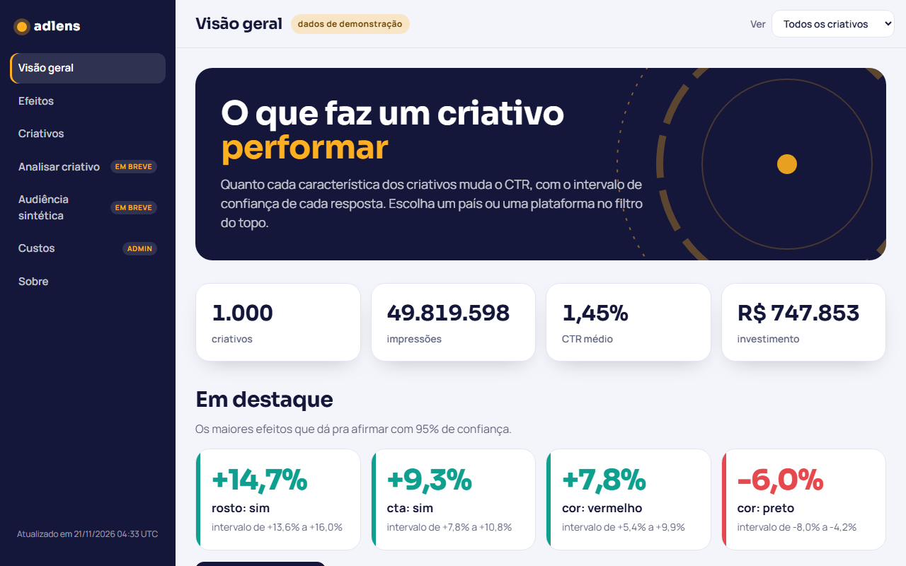

01Live · updates itself on every mergeNo ar · se atualiza a cada merge
adlens, creative intelligence with CI/CDadlens, inteligência de criativos com CI/CD
Which creative features drive CTR, with the confidence of each answer.Quais características dos criativos puxam o CTR, com a confiança de cada resposta.
See more detailsVer mais detalhes